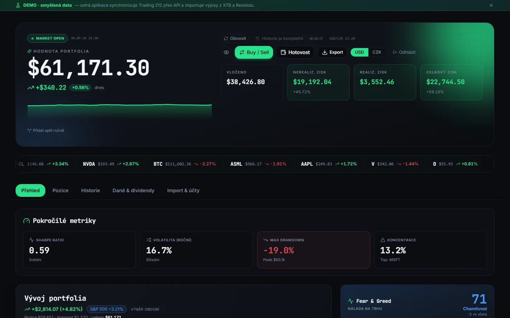
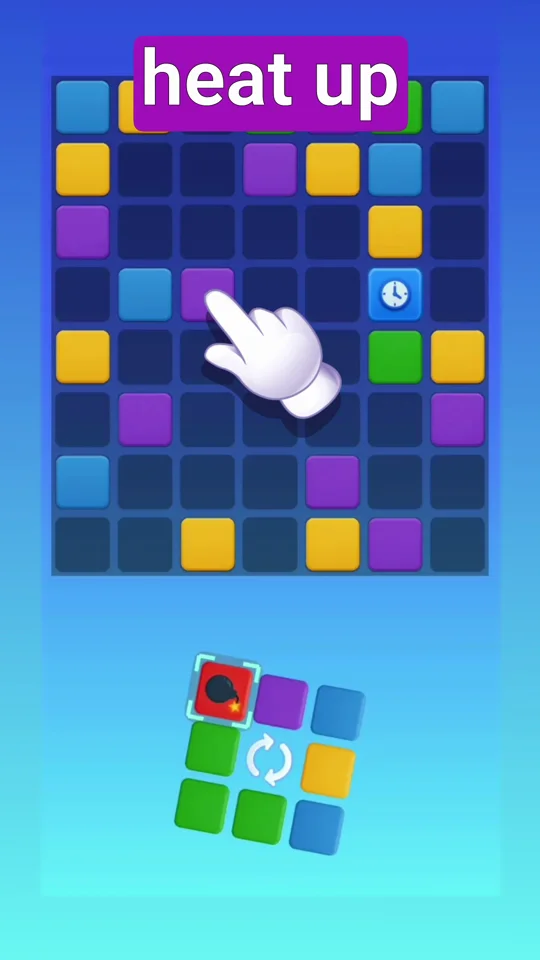
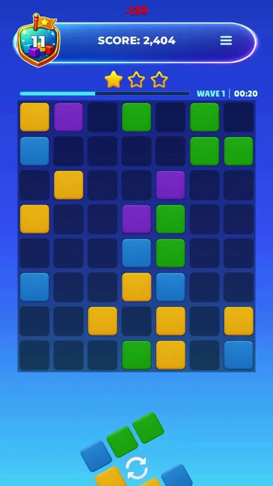
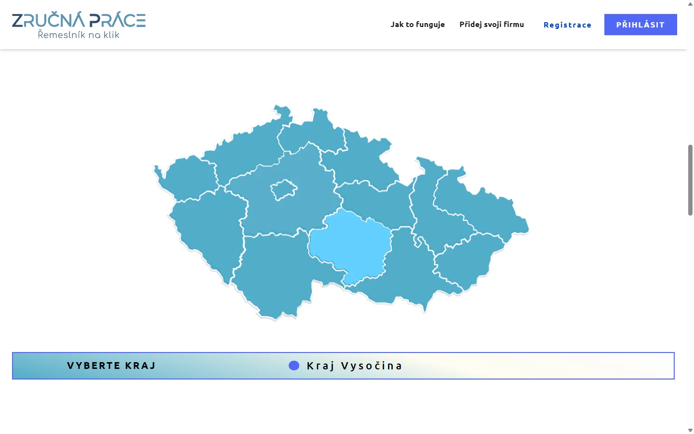
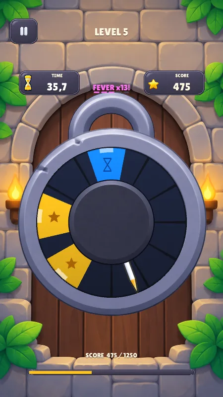
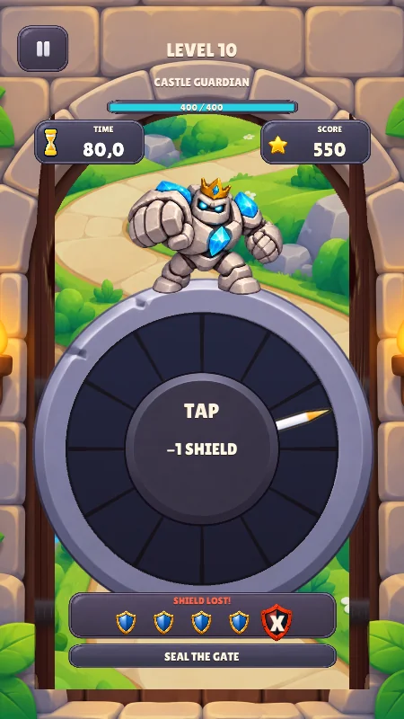

I follow the scene
I follow esports, play competitive games and understand how odds and betting markets work. My first project, as a teenager, was a gaming community with its own game servers (Chrone.cz).
Open to remote IT roles · backend · data · risk
Python & TypeScript developer. At BuiltMind I wrote 100+ production scrapers on AWS Lambda and internal tools that made my colleagues' work easier. On my own, I've shipped 4Corners to Google Play and built a full-stack portfolio tracker you can try right here. My day job as a CNC Setter / Shift Manager taught me to own the result.
I haven't worked on a sportsbook risk desk yet. Here is what I would bring to one.
I follow esports, play competitive games and understand how odds and betting markets work. My first project, as a teenager, was a gaming community with its own game servers (Chrone.cz).
I lead afternoon and night shifts of 10–15 people and I'm the first point of escalation when something goes wrong. Nights, weekends and rotating shifts are fine.
When a check keeps repeating, I script it in Python or SQL — and I can talk to development teams in their language.
CornerForge — two-person indie game studio · 4cornersplay.online
BuiltMind — proptech data, Prague
MGG, Třešť
Secondary Technical School (Střední škola průmyslová, technická a automobilní), Jihlava
I am a self-taught developer — courses, a part-time job at BuiltMind, then my own projects.
Professional and independent projects. The game is in the store, the web app runs in your browser, and the internal tools are shown as interactive re-creations.
Zdeněk was instrumental in optimizing our data processing workflows, which enhanced our team's productivity and data quality.
As a Junior Data & Python Developer I collected, cleaned and checked the new-build housing data that the company's products are built on.

Open live demo ↗The demo runs entirely in the browser with generated sample data — no real account or money. The app UI is in Czech.
Tracks a stock & crypto portfolio across three brokers — live Trading 212 API sync plus XTB (.xlsx) and Revolut (.pdf) statement import — and calculates returns in USD/CZK, dividend income and risk metrics, and generates a Czech tax report.


A tactical block puzzle with 150 campaign levels, survival mode and weekly leagues. I'm the primary developer — gameplay, backend services, monetisation and releases — with substantial AI assistance from Claude Code and Codex.
s3://scraped-data/prague/2023-11/| File | Rows | Status |
|---|
Re-created in the browser with sample files; the real tool ran on the company's S3 data.
A Streamlit app I built so the team could check and fix whole batches of scraped files in a few clicks instead of opening them one by one in a spreadsheet.
reports/market-q3.pdf
| Year | Value |
|---|---|
| Press Run | |
Illustration with sample data. The originals processed third-party market reports, which can't be shown here.
Market reports hide their best numbers in charts. I built two prototypes that find those charts and turn them back into data.

Screenshots of the app — switch screens with the buttons above. In the app itself, hovering a region highlights it and clicking filters tradespeople by that region.
A directory where tradespeople and companies register and customers find them by Czech region — my first full web app.


A one-tap timing game: a needle sweeps around a lock and you tap when it's over a target. Ten levels so far, ending with a three-phase boss behind a sealed door.
When I was a teenager, I ran a Czech & Slovak gaming portal with its own game servers. It lasted about three years and covered its own costs.
Smaller projects
C# command-line tool that recovers files Windows Explorer silently skips when unpacking macOS zips (long paths, Unicode normalisation). CRC32-verified, never overwrites, with a regression test script.
Source code ↗Python CLI on PostgreSQL: relational schema with foreign keys, employee roles and permissions, PBKDF2 password hashing, stock that updates with each order, reporting queries with joins.
From running game servers as a teenager to a game in the store.
A gaming portal with Counter-Strike 1.6 and Minecraft servers, then Chrone Studio — a few streamers whose channels I ran behind the scenes (more above).
A slot machine and a Tkinter hangman game with a GUI — a year before BuiltMind.
Shop & stock management on PostgreSQL with roles and hashed passwords.
My code starts running on AWS Lambda every day — it grows to 100+ scrapers.
Selenium, a CNN page classifier and chart-to-data extraction.
My first tool used by the whole team, not just by me.
First full web app: Django, PostgreSQL, Google sign-in.
Co-founded CornerForge; the game later shipped to Google Play with a real backend and 3,000+ tests.
Full-stack TypeScript + PostgreSQL app that I use every day.
The next game, balanced with a simulator before release.
Own the result, check your work, and stay calm when something breaks.
After a release I watch the crash reports and fix what I find — I don't wait for someone else to notice.
I fix the underlying cause so the problem doesn't come back. Years of leading shifts made that a habit.
Scraping Cleaner, zipfill, level generators, build scripts — when something keeps coming back, I script it.
They help me move fast; the design decisions, review and accountability stay with me. I treat AI output like a colleague's pull request: read it, question it, test it.
Grouped by where I actually used them.
Portfolio Tracker, 4Corners, ZručnáPráce
programming
day to day
BuiltMind, Portfolio Tracker
Scraping Cleaner, chart extractor
from leading shifts
Spoken languages: Czech (native), English (B2).
I'm looking for a remote IT role — backend, data or risk — in a team where I can own real features and keep learning.